CartoCSS Part Three
As part of my research under Robert Roth, I’ve been building course curriculum on CartoCSS through Mapbox Studio for UW-Madison. If you’ve seen my previous blogs on the subject, or seen the fruits of my labor on my website, I’ll be going through how to get started with CartoCSS and Mapbox Studio. I’ll be walking through how to style in CartoCSS with my infamous Roy Liechtenstein tileset. Before I begin, my work doesn’t exist in a vacuum and wouldn’t be possible without the support of Mamata Akella, Lyzi Diamond, Robert Roth, Tanya Buckingham, and many others. Many thanks.
Part One: WTF is CartoCSS?
I’m sure you might have heard this term being mumbled at conferences, on twitter, at Maptime, or more likely not. CartoCSS is a pretty new development in the realm of cartographic design (at least in being an accessible and easy tool anyone can use).
Let’s break down what it means:
Carto: related to maps + CSS: Cascading Style Sheets, the styling language for the web = CartoCSS
Hmmm, could this simply mean that CartoCSS is styling maps for the web? YES (I knew you were a genius).
Webmapping in the 21st century requires tiles- vector or raster squares representing geographic areas at different zoom levels (think about how Google Maps loads in squares when zooming? YEP those are the tiles). Each tile is typically 256 x 256 pixels and stitched together for a web map ‘quilt’ in your browser. Tiles are awesome because they’re efficient, functional, and only need to load what you’re currently looking at on the screen.
So in order to have tiles, we could go to Stamen, CartoDB, the National Park Service or Mapbox for tiles to use. Why reinvent the wheel right? I think a lot of what I do might seem meaningless or stupid to a lot of people. Creating my own tilesets makes building a webmap a much longer process. Plus, if you look at some of the tilesets I’ve made, they’re not very usable. But if cartography was an art/science based on only making usable and functional maps, I don’t think some of the best maps would ever have been created. We are a discipline that is tethered to this notion of usability, but not defined by it. If I was a general artist, no one would ever question how useful my work was and likewise if I was just a programmer, design wouldn’t matter. It’s when we get to this weird middle ground that we have to allow for a gray space. Maps don’t have to necessarily be functional or usable to be incredibly informative or interesting. </rant>
These are the beautifully stupid and impractical tilesets I’ve made:
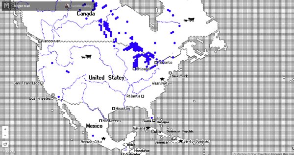
tileset based off of oregon trail
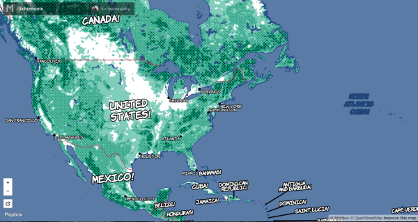
tileset based off of Roy Liechtenstein’s artwork
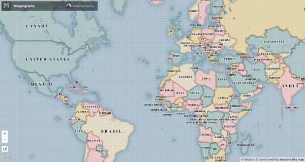
tileset based off telegeography’s submarine cable maps
If you look at every tileset created by Mapbox, CartoDB, Stamen, or NPS, you’ll see how each is formatted for different design considerations. CartoDB’s tiles for instance are a great background for displaying data on top of it, while the National Park Service’s Park Tiles have beautiful terrain included to make a more natural map that’s relevant to showcasing National Parks. CartoCSS allows for making sure all parts of your map informs the user. Making a map for routing? You can customize how many labels show up for major and minor roads and at what zoom levels instead of trusting some other company to do it.
The crazy tilesets I’ve made follow a use-case scenario I developed for lab curriculum on CartoCSS at UW-Madison: A director of an art museum wants a fun map that has 20 POI markers on it to put on their website. This scenario enabled me to make something that’s less functional and way more fun. This is completely meant to be a play on classic cartographic design principles and aesthetic mapping.
Now back to the nuts and bolts of CartoCSS:
This diagram is everything that’s in a web map (of course there are non-tile maps with D3 but that’s another blog in the making). CartoCSS is the first step in the creation of tiles, one of the three major parts besides javascript and data. So now that we understand what CartoCSS is, we can start playing in it!
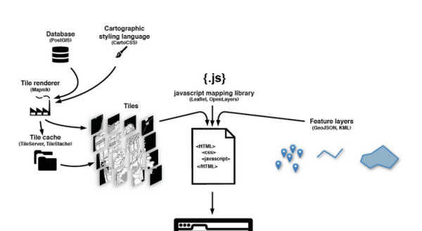
Thanks to Alan McConchie and Beth Schetcher for this diagram!
Whereas CSS can be difficult to implement at times, CartoCSS is really really easy to use. There’s a learning curve to the medium you’re using like Tilemill or Mapbox Studio, but all it boils down to basic conditional logic in computer science ( i.e. if… then… logic). You’re telling the software to take this data and defining different styles based off attributes of the spatial data. For instance, if you’re using Mapbox-Streets (which is offered through Mapbox Studio and uses Open Street Map data), you can separate the styling for roads with the statement ‘class = ‘main’’ to only design for the main roads. Here’s the full CartoCSS documentation on GitHub: here.
Part Two: Making a tileset in Mapbox Studio The first things I like to do are create global variables so I don’t have to use color hex codes every time I need that color and I can also see my color palette all organized in one place. Variables use the @ symbol to be represented. I also want to declare my fonts so I can use nicknames to call them when needed.
To set up your map, you must use the Map{} function, which creates a map object to be added to the tileset.There are several things you can do with Map{}, but declaring your background-color (or if you were to have a background-pattern) is typical for most CartoCSS tilesets.
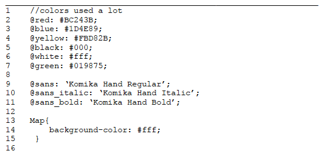
After declaring global variables, it’s time to actually add things to the map! I always start with water because it rarely is different for other zoom levels. It’s worth mentioning that Mapbox-Streets (the dataset I’m using that’s provided with Mapbox Studio) separates the labels for the layers into a different layer. You won’t want to use text functions for non-label layers. Layers in CartoCSS use a hashtag # similar to a id selector in CSS.
To color the water, you just use the selector for water and polygon-fill. You can also change the opacity or use change the polygon-gamma number. Changing the polygon-gamma affects anti-aliasing for polygon features, prevents gaps in the water coloring.
In order to add a border, I have to add a double colon and name this interior statement and can now style the water layer’s line properties. From Mapbox’s manual: “Within a layer, styles can be broken up into ‘attachments’ with the :: syntax. Think of attachments like sub-layers. Add attachment to data layers with heavy filtering to keep file sizes low.”
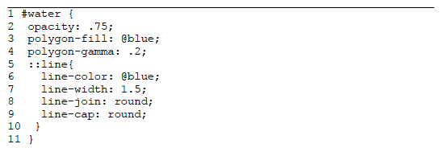
The next thing to style are the country lines. The #admin selector has various attributes that can be used to specify my styling. If you look at the layer tab, you’ll see that the admin_level can be used to specify whether the administrative lines are for country, state, region, county, etc. Having it less than or equal to 2 guarantees that only country lines are showing. I also don’t want the borders on the water showing, so I can use the maritime attribute to only show the borders that don’t touch water.
To have a line show up, you have to declare the line-color and line-width. Because borders can appear jagged sometimes, I set the line-cap and line-joins to be round and add a line-smooth element. Also, to increase the line width at a higher zoom, I just need to use the zoom selector and set the line-width to a higher number at different zooms.
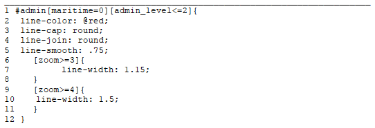
Here’s what we’ve done so far with not even 40 lines of CartoCSS!
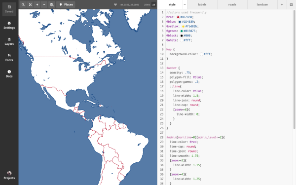
Now that we’ve explored how to style lines and polygons, it’s time to learn how to label. As mentioned earlier, layers are separated in Mapbox-Streets by the geometry and the labels. This makes it much easier to manage and avoid having to constantly use those attachments. If you look in the documentation tab, you’ll notice that under the text selectors, there are two different key words: text or shield. We’re going over both of these two symbolizers, starting with text for country labels.
Text requires text-name and text-face-name in order to work. The logic is that you have to declare what typeface will be displayed and what text actually should be displayed as well. You can choose which option you want displayed, whether you want the local name of the country (i.e. Middle Eastern countries will be in Arabic, the USA + UK will be in English, etc.) or their English, French, German, or Spanish names. Since you’re calling a specific object in one of those arrays, it gets formatted like ‘text-name: [name_en];’.
Recall the global type variables we declared earlier? We’ll use this for text-face-name. Simple call your @sans_bold to choose a bold typeface for the country labels. While not necessary, you probably want to customize your text-fill and text-size. For all of my text, I make a text-fill that’s @white and use a @text-halo-fill that’s black with a text-halo-radius of 2 to make it look like a comic book. Halos work just like a stroke in Illustrator in this instance. Experiment using various text functions to get your labels to be where you want.
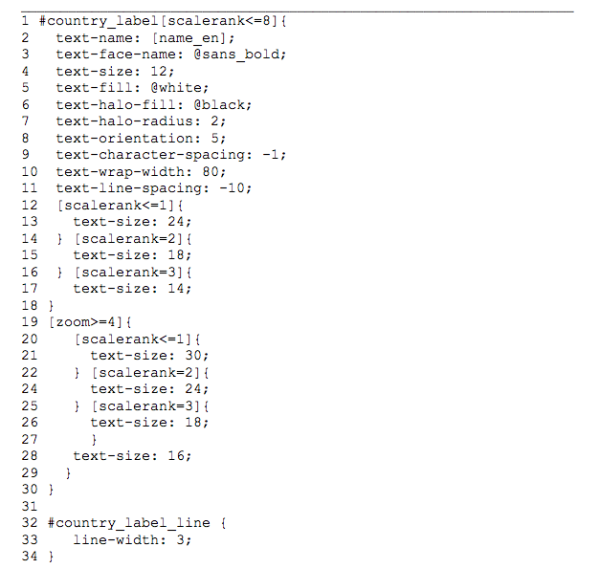
Now that we’ve added some country labels, here’s what we’re working with now:
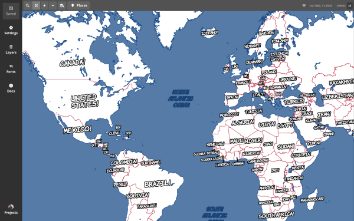
As you can see, there’s a lot of white, which is a little too boring for our purposes of creating a Lichtenstein style map. When I was choosing my sources, I also added Mapbox Terrain, so I could style the land based off of landcover patterns. Mapbox Terrain includes hillshade, contours, and landcover (Mapbox Satellite and watermask have even more options, test out the different additional sources for how you can style your map and have it fit with your inspiration), so I can use polygon selectors to style how these look. This is where I can finally use the halftone texture pattern I added in the .tm2 folder. Once you know how to design landcover, you can use the same logic for the landuse and building layers.
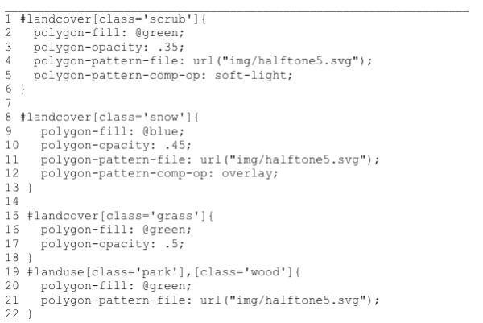
For all of these different landcovers, I choose to style them as polygons, testing which area is going to cover the most surface area, which turned out to be grass. I simply added a polygon-fill and make it 50% transparent. Scrub landcover gets layered over the grass, so I’m using this to add a halftone pattern. First I add a polygon-fill that’s a very transparent green. In order to add my pattern, I have to add the url reference. I put the halftone svg (all image types are acceptable, I just used svg in Illustrator based on personal preference) in a folder inside the .tm2 folder called img and just have to follow the example in the Docs tab.
This is an opportunity to play with Mapbox Studio’s use of comp-op (short for compositing operators from Photoshop) tools. To understand what each does, there’s documentation on Mapbox’s website here about the differences of each operator. For those familiar with Photoshop, you can play around with specific operators you want to use. For this landcover, I’ll be adding the pattern with a soft-light comp-op that makes the pattern a lot less dramatic and harsh to look at. It’s softer than the overlay mode, which is used on the snow landcover in lines 8-13. I add one last layer using the landuse layer for woods and parks to follow the same pattern for scrub, but without transparency or the comp-op. This has a three-layer effect with green overlays, making a beautiful way of symbolizing natural features.
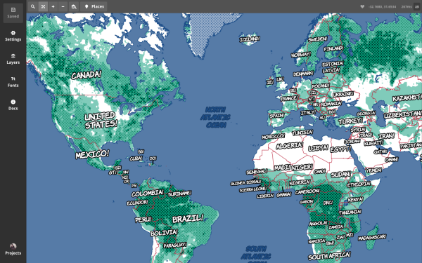
As our map starts to come together at a world view, it’s time to add things that will be added at higher zooms like city names and the aforementioned shield. Shields incorporate the image file being used as the city marker and the text next to it, labeling the location. This is why the operators are a little different for shield versus text. Unlike in Illustrator or ArcMap, where you might position manually where every label will go for a city, you use the shield-text-dx and shield-text-dy to move the label around. The layer with the city labels has a built in attribute called ‘ldir’ which assigns a label placement direction. Using those along with the shield-text-dx/dy will allow you to move label placement around the shield easily.
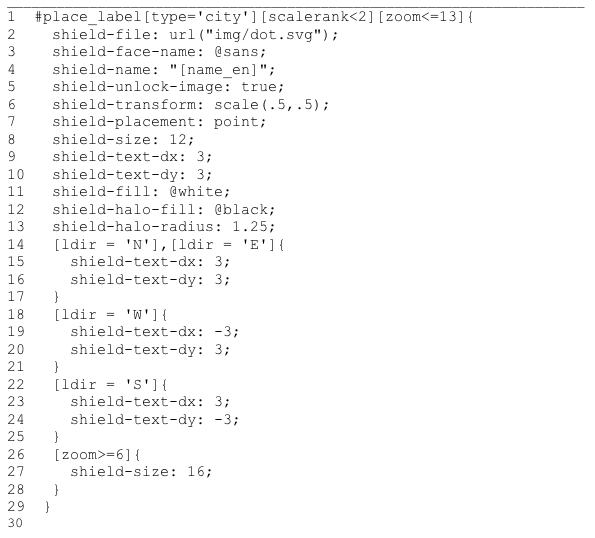
In order to have my city name adjacent to the shield and not have the text on top of the shield, I have to set shield-unlock-image as true. Also, depending on how your marker is sized, you’ll need to use the transform function to scale it down. I also want to place it as a point label, so I use the shield-placement function. After setting the design of my places with shield-size, shield-fill, shield-halo-fill, and shield-halo-radius, I want to define the shield-text-dx/dy. The best way to learn how to place shields and have them change with ldir is with practice. Experiment with this until you’re satisfied; looking at the sample templates provided by Mapbox and see how other designers use the shield.At closer zooms, add more #place_labels of smaller cities, towns, or even villages.
Now we have a much more functional map at other zoom levels:
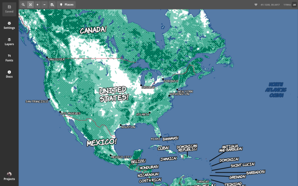
Lastly, we have to add roads so the city view looks realistic. When designing at this point, it’s useful to switch back and forth into the Places view and see how your design works around the world. Styling roads is where we want to add this to create an outer thick black line and a interior white line through the use of ‘attachments’. This mimics the text with the black halo and white fill. Adding a line-join and line-cap that’s round can also help to remove jagged edges that occur. Roads have a ton of attributes that be utilized to style differently, take advantage of that to make different size and color roads.
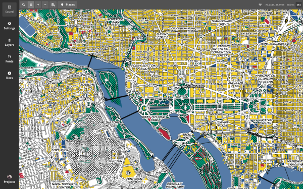
Wow that looks brilliant right!?
The best way I learned CartoCSS was through recreating Roy Liechtenstein’s pop art work as a map. Try something ridiculous in Mapbox Studio, have fun with designing (remember that cartography isn’t a serious science). Feel free to tweet me @katiekowalsky with any questions! If you’re in DC this month, I’ll be teaching a MaptimeDC on this July 16th and a MaptimeMadison on this sometime in September. If you’re going to NACIS, I’ll be teaching this hopefully in Minneapolis in October!
← back to blog